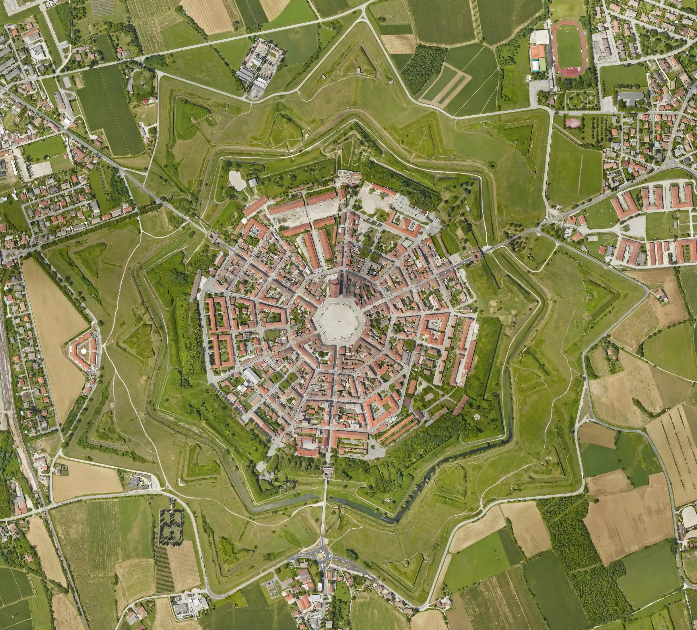
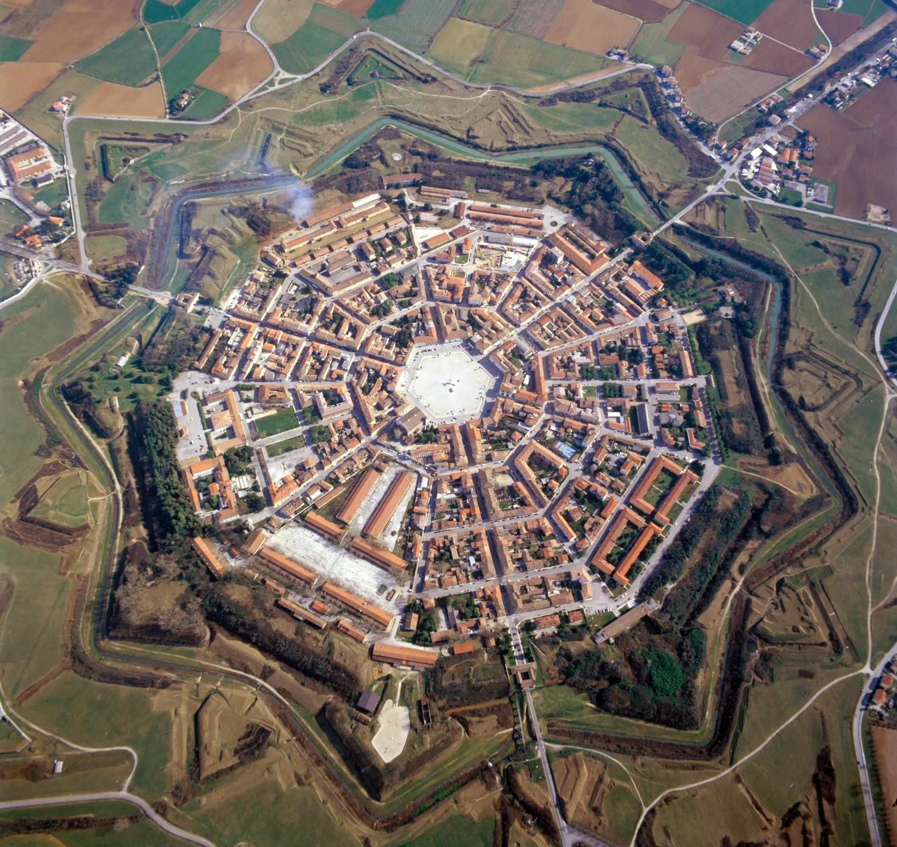
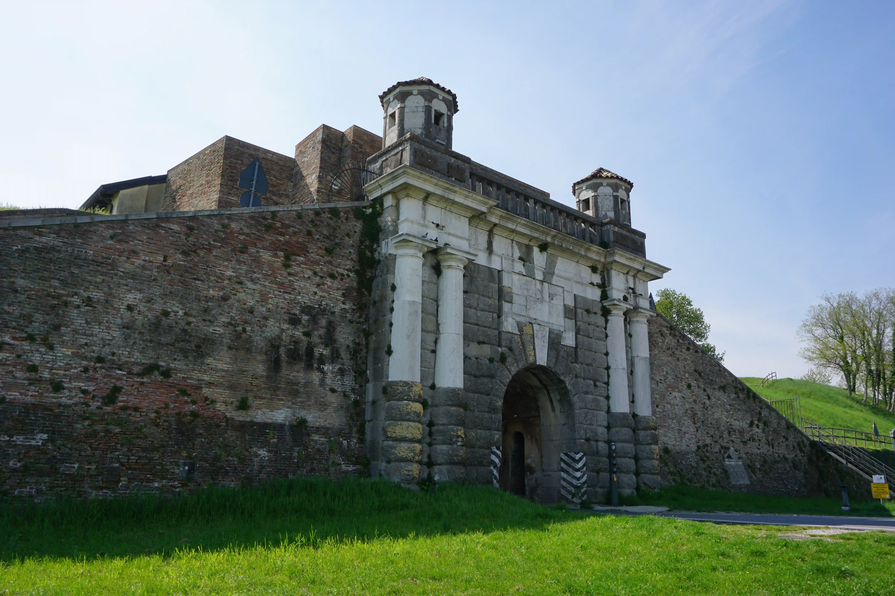
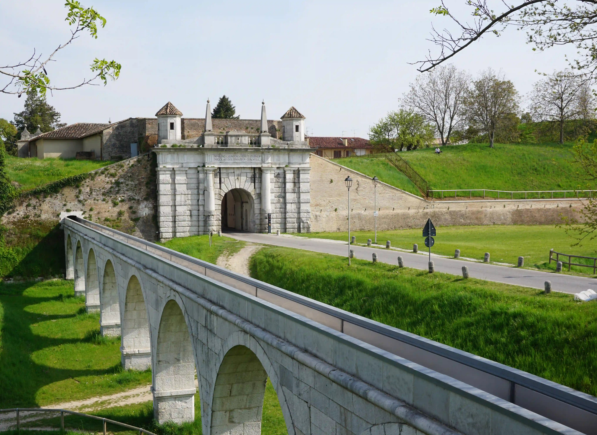
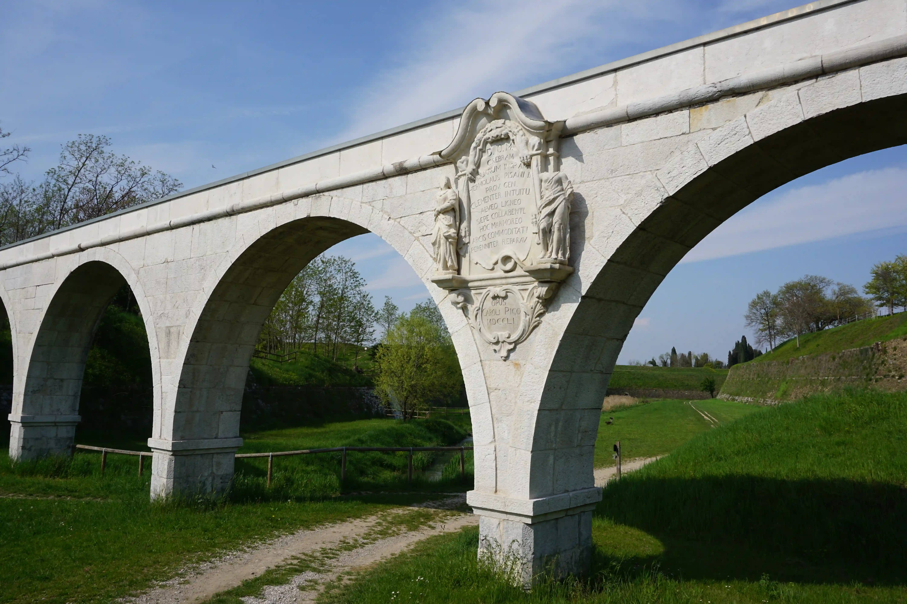
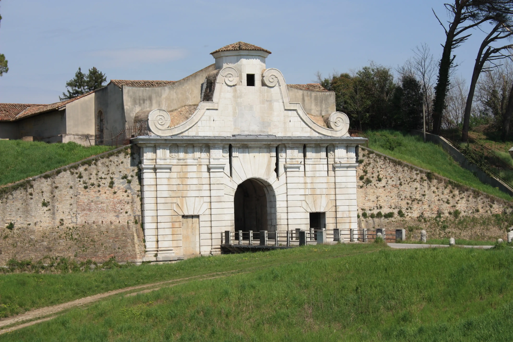
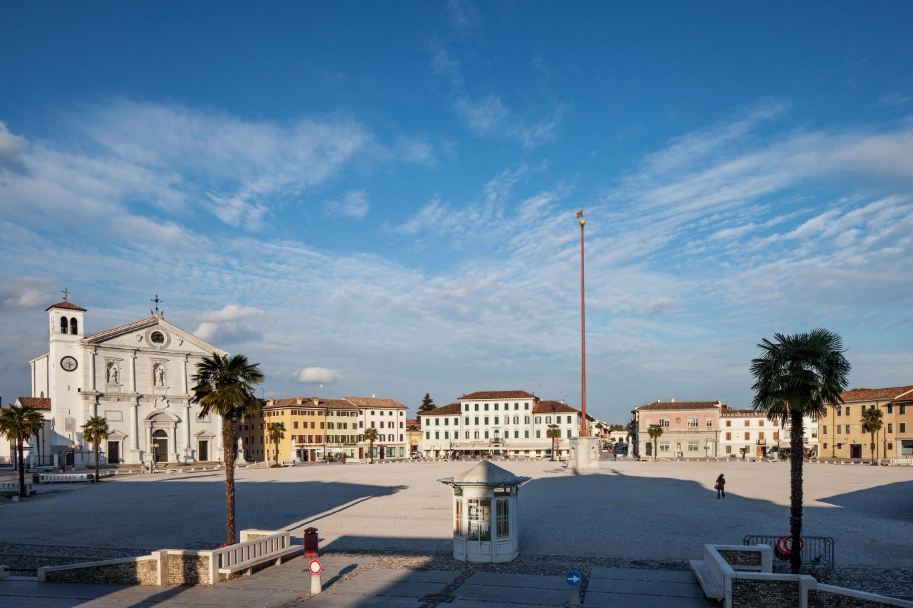
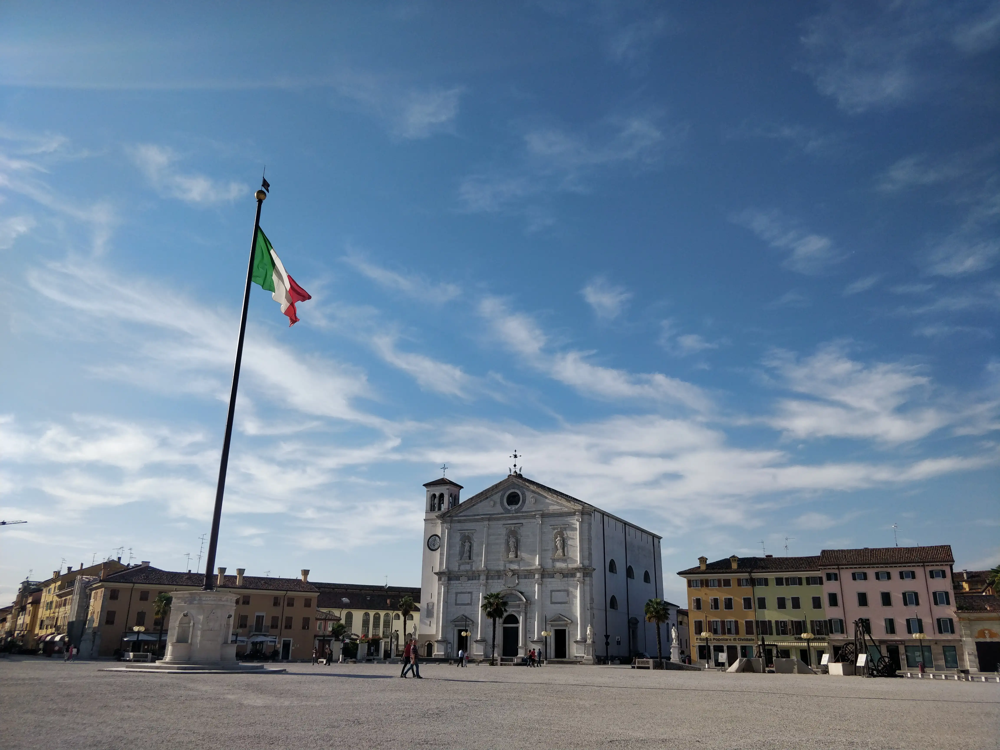
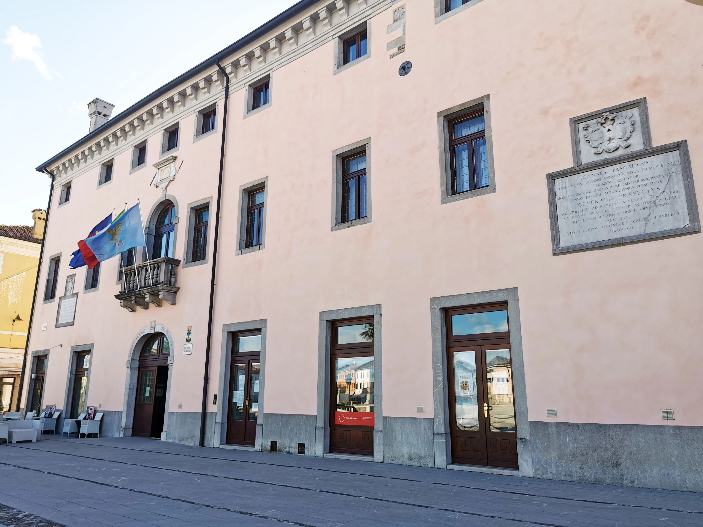
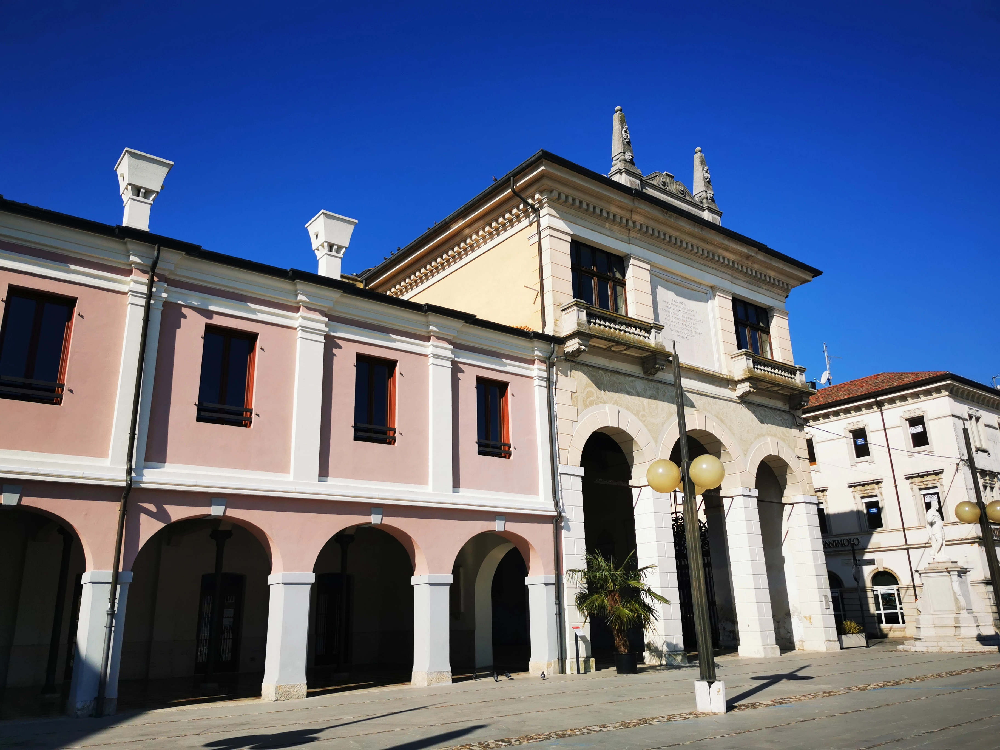

Componenti UNESCO in mappa
PALMANOVA
La Città Fortezza di Palmanova, estremo orientale della Repubblica di Venezia fu costruita nel 1593 in un punto strategico della pianura friulana all’incrocio tra l’antica via Julia Augusta e la Strada Ungaresca (Stradalta), per difendere i domini della Serenissima dalle continue incursioni ottomane e asburgiche di quegli anni.  Si tratta dell’unica fortezza edificata ex-novo dai veneziani, progettata come macchina da guerra seguendo i canoni rinascimentali per creare una città fortificata ideale, perfetta sintesi di elementi militari e aspetti civili delle città utopiche rinascimentali in stretta connessione con il perimetro fortificato, Palmanova fu un modello per molte altre fortezze europee, quali Pamplona, Vauban, Fredericia e molte altre.
 Fortezza inespugnabile, Palmanova è caratterizzata da tre cerchie di mura a forma di stella a nove punte (due veneziane e una realizzata da Napoleone), bastioni, rivellini esterni, situati oltre il fossato davanti alle cortine per difendere il nucleo urbano dai cannoni, esempio delle nuove tecniche ossidionali. Per non essere visibili a distanza dai nemici le mura furono coperte di vegetazione e il campanile è basso e disarmonico rispetto alla maestosità del Duomo, per confondersi fra gli edifici e non essere esposto all’artiglieria nemica; le uniche costruzioni visibili dall’esterno della fortezza sono le tre porte. Progettata seguendo regole geometriche precise, il centro del potere e del commercio di Palmanova è Piazza Grande, di forma esagonale, da cui si diramano sei strade radiali principali e 18 radiali secondarie in direzione della prima cerchia di mura. Le tre porte della città – Udine, Cividale e Aquileia (Porta Mare) – costituiscono una via d’entrata, ma non hanno uscita in linea . La perfezione della sua forma a stella a nove punte, con le tre cerchia di mura e la sua piazza esagonale, i cui lati sono collegati ad una via che, partendo dalle mura, arriva esattamente al centro della piazza, sono apprezzabili soprattutto dall’alto. INS VIDEO V1 Palmanova con le sue mura è arrivata a noi in perfette condizioni, anche grazie all’opera di convincimento dell’arciprete Monsignor Merlino, che convinse i tedeschi a risparmiare la fortezza dall’essere rasa al suolo durante la seconda Guerra Mondiale e nel 1960 è stata proclamata Monumento Nazionale.PORTA CIVIDALE
Costruita insieme a Porta Udine tra il 1604 e il 1605, massiccia e severa nelle sue forme, Porta Cividale è rivestita in bugnato rustico con pietra bianca e grigia, che la rendono più scura rispetto alle altre. Porta Cividale è caratterizzata da due doppi colonnati, che sorreggono due garitte le quali, poste ai lati della porta, fungevano da torri di guardia, collegate da una balaustra. 
PORTA UDINE
Ingresso alla città per chi arriva da Udine, è la meno decorata delle tre, con la facciata monumentale in pietra bianca e grigia, su cui spiccano, ben conservati, i due pinnacoli che una volta fiancheggiavano il Leone di San Marco sul basamento, poi rimosso dai francesi, e due garitte di guardia. All’interno della porta sono ancora visibili la corte in cui, in caso di assedio, sarebbero rimasti intrappolai i soldati nemici, e i due porticati, con le stanze destinate alle guarnigioni addette alla guardia, dotate di caminetti. A Porta Udine sono ancora presenti le due ruote originali che, azionate da un argano, permettevano di alzare e abbassare il ponte levatoio per collegare Palmanova con l’esterno. 
ACQUEDOTTO VENEZIANO E CASCATELLA
Realizzato in pietra bianca d’Istria nella prima metà del XVII secolo per l’approvvigionamento idrico della fortezza, l’Acquedotto Veneziano con la sua struttura possente, risulta ben visibile in mezzo alla vegetazione, nei pressi di Porta Udine. Progettato insieme alla fortezza con la duplice funzione di portare l’acqua ad uso civile dalla Roggia di Palma che ha origini nel torrente Torre a nord di Udine all’interno della città e per allagare il fossato seicentesco esterno alle mura, elemento fondamentale di difesa per Palmanova, in cui si tuffa dopo un salto di circa 3m, detto Cascatella, ripristinata nel 2015. 
PORTA AQUILEIA
Rivolta verso il Mare Adriatico e per questo un tempo denominata Porta Marittima, Porta Aquileia, fu la prima ad essere costruita nel 1598 e rappresentava, all’epoca della Repubblica Veneziana, l’ingresso di rappresentanza per Provveditori Generali e ospiti illustri provenienti da Venezia. Rivestita in pietra d’Istria, è grazie a due grandi volute barocche realizzate come elemento decorativo a protezione della garitta di guardia, a fregi e stemmi, che si contraddistingue dalle altre due porte per eleganza e ricchezza di decori, compreso il Leone Alato Veneziano, oggi non più visibile poiché scalpellato dai francesi nel 1797, insieme a quello situato nella piazza principale. L’accuratezza della sua facciata contrasta la funzionalità e il rigore militare con cui sono organizzati gli spazi interni. 
PIAZZA GRANDE
Cuore della vita cittadina, Piazza Grande era anche il centro del potere della fortezza, in cui venivano riunite le guarnigioni militari per le esercitazioni e per questo è detta anche Piazza d’Armi. Il Duomo e i più importanti palazzi storici di epoca veneziana affacciano su Piazza Grande, conferendole anche un ruolo di rilievo dal punto di vista sociale ed economico e il compito di rafforzare la connessione fra lo Stato e la popolazione locale.

La forma esagonale perfetta disorienta la vista se osservata dal centro della Piazza e lungo il suo perimetro scorre un piccolo canale d’acqua, che simboleggia la purezza della città: come fuori dalle mura il fossato proteggeva la città dai nemici, qui l’acqua respingeva la morte, difendendo Palmanova dalle forze oscure. Inoltre, ogni via che affaccia sulla piazza è decorata da due statue raffiguranti i Provveditori più meritevoli.

STENDARDO
Esattamente al centro di questa Piazza perfetta si erige l’alto Stendardo, posto su una base esagonale di pietra d’Istria, i cui lati sono caratterizzati da scritte diverse che fanno riferimento a temi quali la fratellanza, la pace, diritti, doveri e correttezza del singolo individuo nei confronti della collettività. Lo Stendardo rappresenta una testimonianza simbolica della storia della fortezza, in quanto sul suo pennone dopo il gonfalone di San Marco, si sono alternati la bandiera francese, l’aquila asburgica e oggi svetta la bandiera italiana. Diventato simbolo cittadino, lo stendardo è chiamato amichevolmente “Mario” dagli abitanti di Palmanova. 
PALAZZO DEL PROVVEDITORE GENERALE
Il Palazzo del Provveditore Generale, all’imbocco di Borgo Marittimo, oggi sede del Comune, accoglieva negli alloggi al secondo piano il Provveditore, che aveva pieni poteri militari e amministrativi sul territorio, e la sua famiglia, mentre al primo piano si trovano la Sala Consiliare e il Salone d’Onore, ancora utilizzate come sale di rappresentanza, oltre alla Cancelleria per l’amministrazione della giustizia. L’approvvigionamento idrico era garantito da tre pozzi. 
LOGGIA DELLA GRAN GUARDIA
Accanto al Palazzo del Provveditore Generale e ad esso collegata nel corso del tempo, si trova la Loggia della Gran Guardia che, oltre alle truppe militari, ospitava il corpo di guardia, fra cui gli alabardieri, che sorvegliavano la Piazza e proteggevano il Provveditore stesso. Si tratta di un edificio caratterizzato da un loggiato a sette arcate 